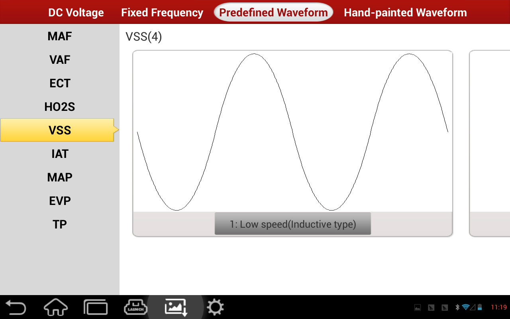

|  |
At left side, it lists sensor types. Select one sensor, it will list corresponding wave form types in the right. Select one wave form, it displays sketch map, name and type of the wave form on the other side. return to the analog interface on which the selected wave form has been called out.